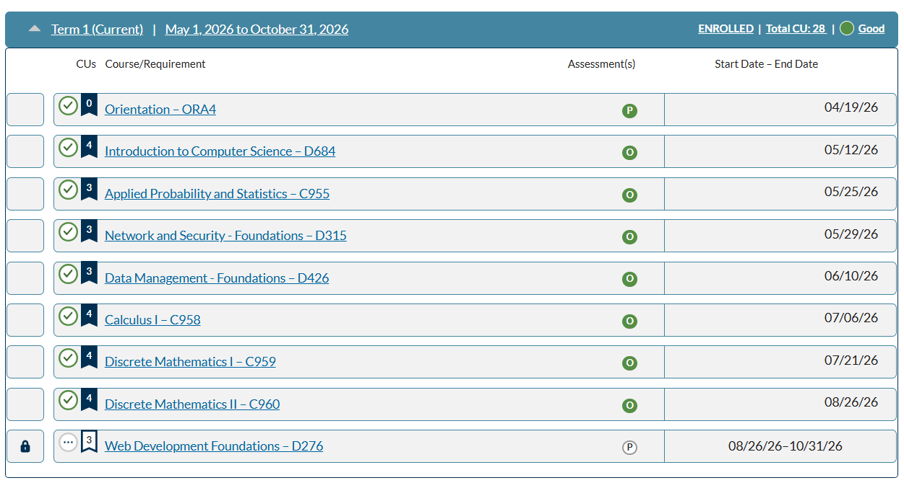

Target Role:
Helpdesk / AV / IT Support Specialist
Key Snapshot
West Valley City, Utah | 801-895-5918 | nathanvelasquez895@gmail.com
LinkedIn |
GitHub
-
Education: Student - B.S. in Computer Science - Western Governors University
See my current progress

- Certifications: CompTIA A+ Certification | Issued February 2026 View Credly Badge
- Core Strengths: Tier 1 Troubleshooting, Active Directory, Windows/Linux Administration, Custom Scripting, ServiceNow ITSM